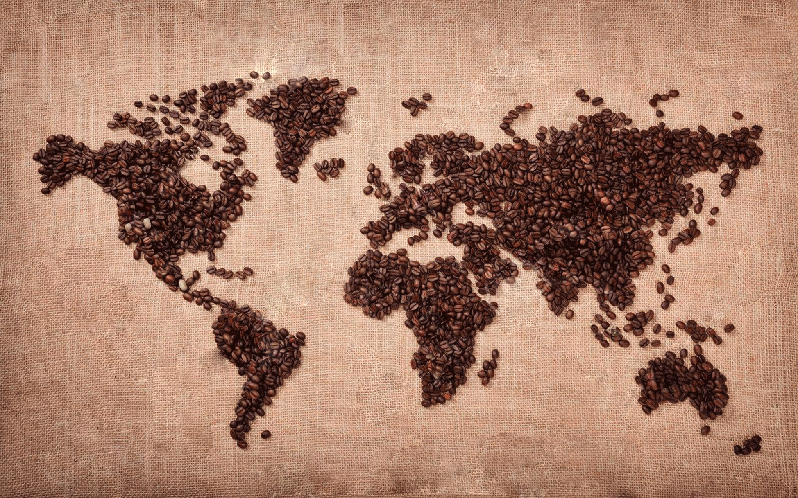

Historia del café
La historia del café es una de las más atractivas y románticas que pueda haber. empieza en el Cuerno de África, en Etiopía, donde el cafeto tuvo su origen probablemente en la provincia de Kaffa.
Cuenta que a un pastor de cabras etíope le asombró el animado comportamiento que tenían las cabras después de haber mascado cerezas rojas de café.
Lo que se sabe con más certeza es que los esclavos a los que se llevaba de lo que es hoy el Sudán a Yemen y Arabia a través del gran puerto de aquel entonces, Moca, sinónimo ahora con el café, comían la suculenta parte carnosa de la cereza del café.

Al principio, las autoridades del Yemen alentaron mucho el consumo de café, ya que sus efectos se consideraban preferibles a los más fuertes del “Kat”, un arbusto cuyas hojas y brotes se masticaban como estimulante.
Se extendió rápidamente por todo el mundo árabe y los cafés se convirtieron en lugares muy concurridos en los que se jugaba al ajedrez, se intercambiaban chismes y se disfrutaba del canto, el baile y la música.
Los establecimientos estaban decorados con lujo y cada uno de ellos tenía su propio carácter.
Los establecimientos de café árabes pronto se convirtieron en centros de actividad política y fueron suprimidos. en las siguientes décadas, el café y los establecimientos de café fueron prohibidos varias veces, pero siguieron reapareciendo.
Con el tiempo se encontró una solución: el café y los establecimientos de café tuvieron que pagar impuestos.
EL CAFÉ HOY
los estadounidenses, los mayores consumidores del mundo, Seattle es el nuevo hogar espiritual del café.
La ciudad más lluviosa de entre las principales de los Estados Unidos dio a luz, en la década de 1970, una cultura cafetera o de “Latte” que se impuso en los Estados Unidos y mejoró de forma espectacular la calidad general del café que toman los estadounidenses.
Hoy en día, en cualquier lugar público de los Estados Unidos habrá uno o varios puestos de café que ofrecerá una variedad de cafés, bebidas y refrigerios.